Dicas para fotos de referência
Para criar um desenho detalhado e realista, fotos de referência de alta qualidade são essenciais. Este guia vai ajudá-lo a entender o que faz uma boa foto de referência e fornecer dicas sobre como tirar as suas próprias, garantindo que tenha os melhores materiais possíveis para a sua arte.
Câmera
Utilize um smartphone ou câmera digital de boa qualidade para capturar o máximo de detalhes possível. Por favor, envie as fotos no formato original, sem cortar, editar ou fazer capturas de tela, pois isso pode reduzir a resolução e a qualidade das imagens.
Iluminação
Tire suas fotos com luz natural, seja dentro de casa perto de uma janela ou fora, em uma área sombreada. Posicione a fonte de luz atrás de você, com o assunto voltado para a luz. Evite usar iluminação artificial ou flash, pois podem alterar as cores de forma artificial.
Ângulo
Capture a foto no nível dos olhos do sujeito para evitar distorcer suas características. Isso pode ser feito agachando-se com a câmera ou colocando o sujeito em uma superfície mais alta, como uma mesa ou cadeira.
Detalhe
Aproxime-se e preencha o quadro com a cabeça e o peito do animal, sem usar o zoom. Meus retratos focam nos traços faciais do sujeito, por isso é fundamental que você obtenha uma boa foto da cabeça.

Qualidade
Certifique-se de que as fotos estão em foco nítido. Como regra geral, se você puder dar zoom e ver os pelos individuais e os detalhes nos olhos do sujeito, isso significa que a foto tem qualidade suficiente para ser usada como referência para o desenho.
Personalidade
Tente capturar o caráter e a expressão natural do sujeito. Eu desenho o que vejo, por isso é importante que você esteja satisfeito de que a foto de referência mostra a verdadeira personalidade do seu pet.
Quantas mais fotos conseguires enviar melhor, ângulos diferentes, expressões diferentes, iluminações diferentes etc. Quantas mais imagens tiver para servirem de referência, melhor conseguirei extrair a personalidade do patudo..
Exemplos